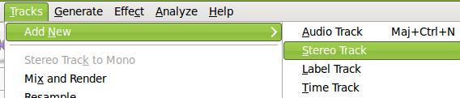
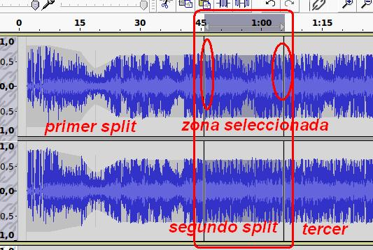

3. Herramientas de Edición
Las herramientas de cortar, copiar y pegar requiere que hayamos seleccionado (herramienta se selección) una parte de una pista de un proyecto para pegarlo en otra pista o, en otro lugar de la actual, la zona seleccionada.
1. Seleccionamos una parte de una pista.
2. Utilizamos el botón copiar.
3. Generamos una pista nueva Estéreo (dos canales)

4. Utilizando el botón pegar, en nuestra nueva pista, observarás que se duplica la zona seleccionada. Esto es muy recomendable cuando queremos aplicar un efecto pero sin perder el sonido original.
5. Selecciona una zona que desees que desaparezca o que silencie. Una vez seleccionado utiliza el botón de silenciar y observa, al reproducir, que en esa zona está carente de sonido.
6. Cuando desees recortar una zona y que sea la que permanezca en la zona de tiempo debemos utilizar la herramienta trim. Esto es válido para llevar un trozo de una pista a otro proyecto o para quedarse con una parte del fichero de sonido original. La diferencia con cortar y pegar es que con cortar la zona seleccionada es la que desaparece, mientras con el trim la zona seleccionada es la que permanecey el resto desaparece.
7. Una herramienta de Edición que no dispone de botón en la barra de herramientas es Split (dividir). Esto permite dividir una pista en varias partes. Selecciona una zona y Edición / Split (dividir) y el resultado es una pista en línea de tiempo dividida en dos pedazos. Esto es muy válido cuando queremos aplicar efectos o la herramienta envolvente a una zona y evitar que la misma no se aplica a otra zona.

Jo.R.C.A. 2004 - 2011

Edición de Audio y Video con Software Libre by José Ramón Cerdeira Alonso is licensed under a Creative Commons Reconocimiento-No comercial-Compartir bajo la misma licencia 3.0 España License